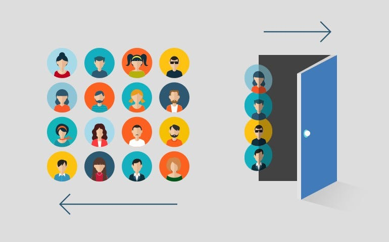

Evaluated 5 years of Beyond Meat financials, identifying declining revenue, negative margins, and liquidity risks. Delivered actionable insights for debt restructuring, cost optimization, and operational efficiency through SQL analysis and Power BI dashboards.
Analyzed historical retail sales to uncover key trends by segment and category. Built predictive models in Python and visual dashboards in Power BI, enabling actionable strategies to increase revenue, improve forecasting accuracy, and optimize product offerings.

Identified key factors driving customer churn through SQL and Power BI analysis. Highlighted at-risk demographics, multi-product clients, and inactivity trends, supporting actionable retention strategies and targeted interventions to reduce churn.

Analyzed employee absenteeism patterns and designed targeted health incentives and compensation adjustments. Built interactive Power BI dashboards to inform HR decisions, improve retention, and optimize workforce scheduling based on behavioral and demographic insights.